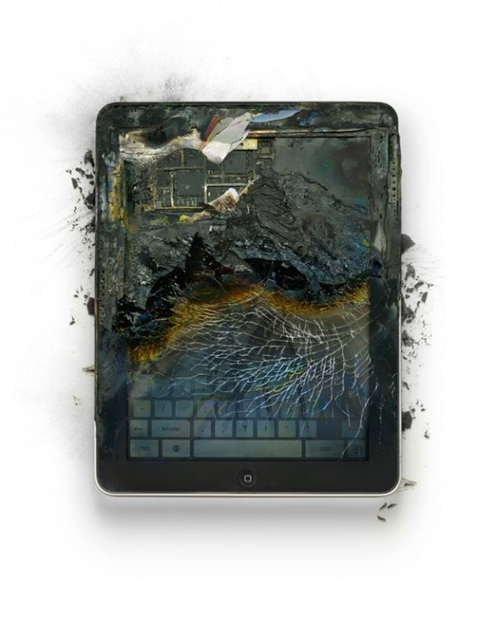

Apple Destroyed
After smashing an iPod Touch that his two boys constantly fought over artist and former Apple employee Michael Tompert realized he should do something with this piece of technology as liquid poured out of the shattered screen. The series of photographs were recently featured in a small San Francisco Gallery, Small Worms Gallery.
From an art critic’s point of view, the destroyed gadgets contain strains of Dadaism and Surrealism. Everyday products are turned on themselves and made to seem unfamiliar again.
Images found on Fubiz and full story on Michael Tompert and his art on LA Times.